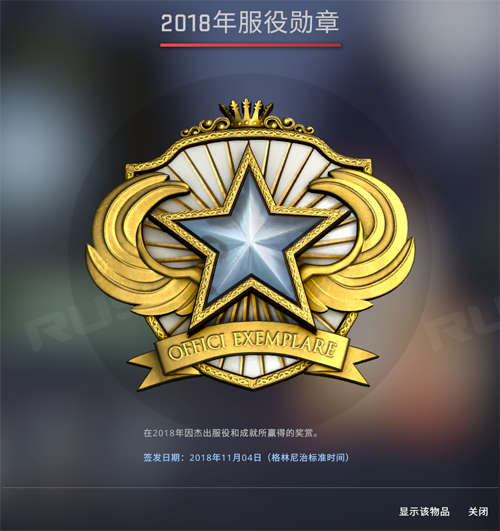
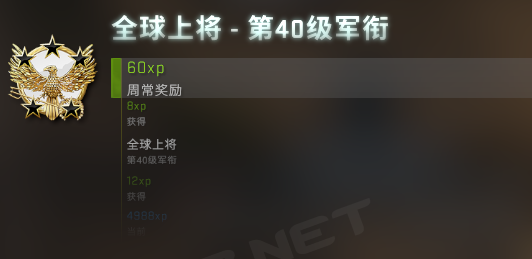
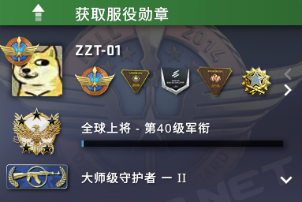
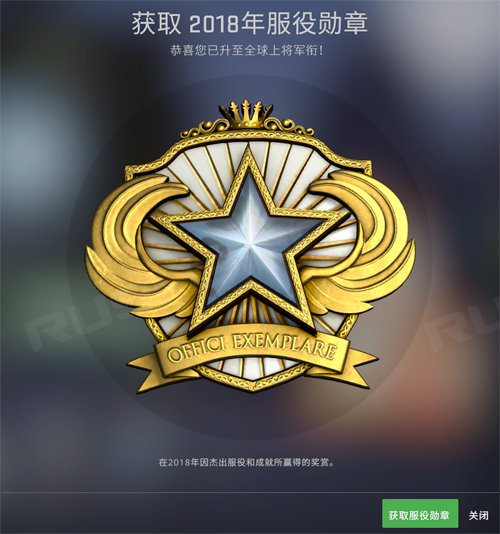
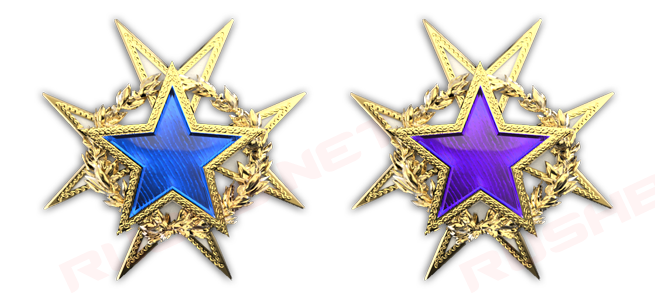
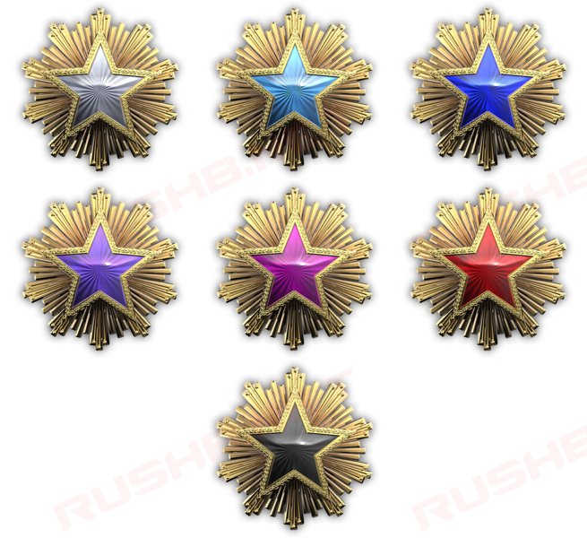
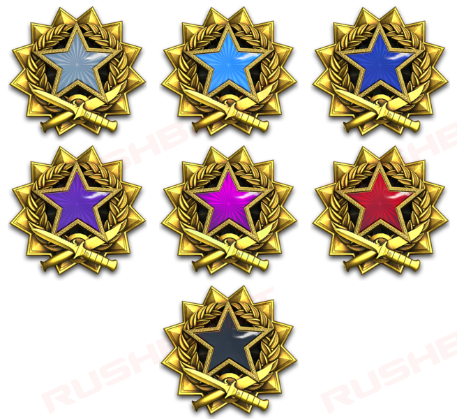
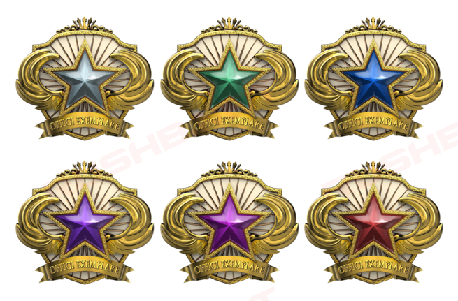
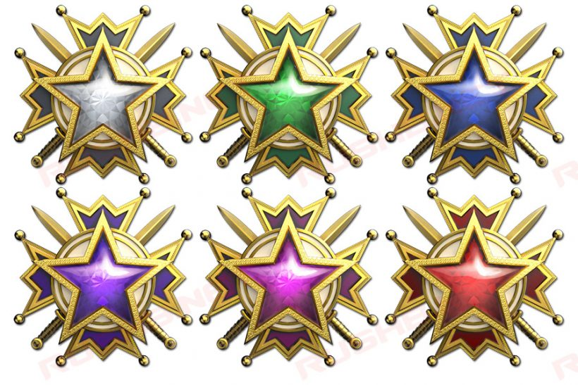
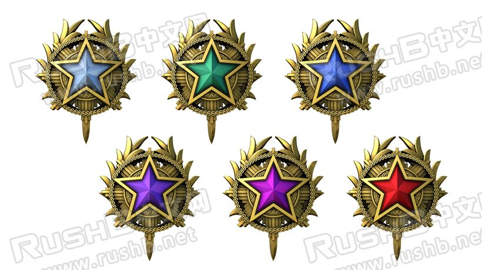

CSGO RushB中文网
CSGO RushB中文网
CSGO服役勋章/奖牌是2015年5月的更新中和个人资料军衔（等级）一起加入游戏中，和其他胸章一样用于展示，官方说明为：在20XX年因杰出服役和成就所赢得的奖赏。
注意，达成条件后服役勋章并不能直接获得，需要手动领取，教程见下方。

那么，CSGO服役勋章该如何获得呢？
简单来说，打游戏升级，升到40级就可以领取了。
玩家只要在CSGO官方服务器打任意模式即可，比如竞技模式、休闲模式等等。每局游戏结束后会结算经验（经验多少取决于游戏得分以及周常奖励等），个人资料军衔每当获得5000点经验即可升一级，当玩家升到40级（全球上将）后，即可领取服役勋章。每年的服役勋章提供多个颜色等级（不同颜色勋章图片见下方），玩家领取后等级重置，然后可以继续升级到40级再领取下一等级颜色的勋章。
但要注意的是，玩家只能领取当年的服役勋章，，比如2019年内只能领取2019年服役勋章，以前的无法领取。
- *查看监管案例并提交正确结果也可以获得经验
- *社区服和对战平台不属于官方服务器，所以没有经验
- *服役勋章无法交易和出售购买
- *个人资料军衔最高为40级，无法升级到更高，如果玩家在40级后不领取服役勋章继续打经验，那么等级还是40级。
服役勋章获得方法详细流程：
1、打官方服务器任意模式达到40级

2、达到40级后，点击个人资料卡上方提示的“获取服役勋章”

3、点击后即可正式领取，恭喜，您已升到全球上将军衔！您现在有资格获取—枚用于炫耀功勋的可显示服役奖章。获取服役奖章能让您再次在服役之旅中提升军衔，向全球上将军衔和您的下一枚服役勋章迈进。

领取完服役勋章并不意味着结束，玩家可以继续提升个人等级到40级，从而升级服役勋章（老玩家所说的2转、3转等等），服役勋章有多个等级，每个等级不同颜色。
当然，如果你不喜欢今年的服役勋章，也可以选择不领取，个人资料军衔会保留到第二年，到时可直接领取下一年的服役勋章。不过要注意，军衔等级上限是40级，玩家可以继续升级（打掉落），但等级会一直保留在40级，领取徽章后，会直接重置为1级。
以下是CSGO至今推出过的各个等级服役勋章
*不同年份相同等级的服役勋章颜色也不一定一致
2015年服役勋章
由于推出的时间较晚，只有两个等级，一转为蓝色，二转为紫色
2016年服役勋章
一共推出了7种，等级从低到高为白、青、蓝、紫、粉、红、黑，其中红转和黑转几乎没有人获得。
2017年服役勋章
一共推出了7种，等级从低到高为白、青、蓝、紫、粉、红、黑，同样红转和黑转几乎没有人获得。

2018年服役勋章
一共推出了6种，由于之前黑转几乎没人达到所以取消，等级从低到高为白、绿、蓝、紫、粉、红，目前已知有人获得了最高级6转。

2019年服役勋章
一共推出6种，等级从低到高为白、绿、蓝、紫、粉、红，玩家可以在2019年获得。

2020年服役勋章
一共推出6种，等级从低到高为白、绿、蓝、紫、粉、红，玩家可以在2020年获得。
